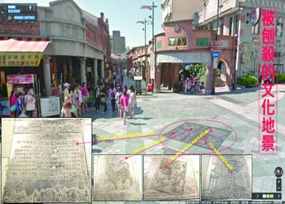

|
 新北市三峽老街石板路與鑄鐵地磚遭刨除，引起文史團體與地方不滿，17日將成立「三峽文資守護聯盟」，三峽民權老街商圈發展協會、三峽老街街區管理委員會發聲明請恢復原狀。
「三峽文資守護聯盟」集合在地文史團隊、青年、社區人士、社區營造團隊，透過網路串連與實際連署，將於17日在清水祖師廟前廣場成立。
聯盟成員包括，SHOCK三峽客地方媒體、三角湧文化協進會、北大特區聯合策進會、永續三峽環境文化工作室、甘樂文創、我是三峽人、李梅樹紀念館、臺灣城鄉永續發展協會、國立台北大學文化志工團、李梅樹文教基金會。
引起極大風波的「刨除石板路事件」發生後，「三峽梅樹月藝術祭」主辦單位，利用google map還原三峽老街廣場入口意象，30件文化鑄鐵地磚全景圖，只不過，這些舊的景物早已經人事全非。
藝術祭主辦單位表示，事實上，從老街頭的廣場到老街尾，總共有60件文化鑄鐵地磚，說的正是三峽的在地故事，也是與老街息息相關的故事，區公所刨掉最精華的30件，形同是「斷頭」，也破壞了當初整體設計的完整性。
藝術祭主辦單位指出，這批鑄鐵地磚與老街上的特色水溝蓋、人孔蓋、門牌等街道家具相互輝映，是西元2006年老街再造時整體設計的一環。政治人物震怒、道歉，於事無補，除原地回復原狀，還有什麼好說的呢？
蘇姓網友說，來三峽就是要看不一樣的景點，老街門面的景觀被拆除了，還有人會來嗎？要恢復原來的景觀才是老街居民和店家的希望。
三峽民權老街商圈發展協會、三峽老街街區管理委員會發表聯合聲明指出，三峽老街廣場具有特色，紀錄三峽人開墾歷史與文化榮耀的景觀，強烈要求將地磚與鑄鐵藝術恢復原狀，因為，政府拆除的不只是三峽老街民眾生活的一部份，也把民眾對政府的信任一併拆除。
無預警遭拆除的鑄鐵地磚，包括三峽拱橋、藍地黃虎旗紀念三峽的戰役、三峽早年米粉和茶葉的包裝圖案、林占梅歌詠三角湧的詩作，李梅樹教授畫作，是三峽的人文與開發史。
台灣城鄉永續關懷協會執行長林峻丞說，三峽老街廣場遭破壞，犧牲文化記憶，未經公民討論便草率決定，還談什麼文化觀光，與參與式公民精神？
回前頁
|